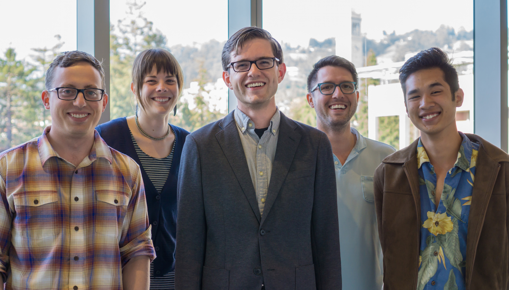
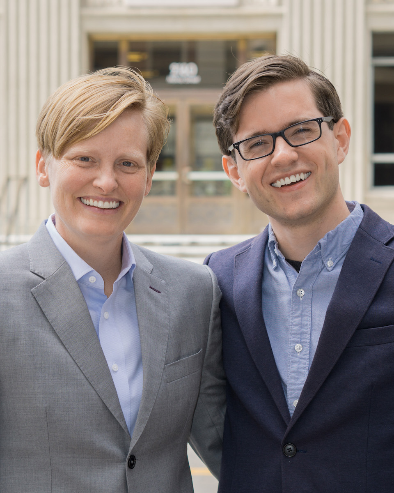

Endorsements
Add your name below!
Endorsers
- Lori Droste, Berkeley City Councilmember*
- Susan Wengraf, Berkeley City Councilmember*
- Darryl Moore, Berkeley City Councilmember*
- Daniel M. Kammen, Professor of Energy, UC Berkeley
- Alfred Twu, Zero Waste Commission Chair
- George Perezvelez, Police Review Commission Chair*
- Liz Varnhagen, Community Environmental Advisory Commissioner
- Kelly Jiang, Energy Commissioner
- Victoria Q. Legg, Disaster and Fire Safety Commissioner
- Diego Aguilar-Canabal, Housing Advisory Commissioner
- James Reagan, Director Emeritus Homeless Shelters, 25 years; Former Commissioner Human Welfare Commission
- Eric Panzer, Chair of Livable Berkeley
- Sonja Trauss, Founder of the SF Bay Area Renter's Federation
- Bob Epstein, Business Entrepreneur, Environmental Activist
- Eric G. Meyer, Director of Field Operations, Environmental Progress
- Jenna Shakiban, President of Engineers for a Sustainable World at Berkeley
- Dax Vivid, Acting President, UC Berkeley Graduate Assembly
- Jonathan Morris, External Affairs Vice President, UC Berkeley Graduate Assembly
- Andrew Schwartz, Vice President of Finance, UC Berkeley Graduate Assembly
- Aaron Smyth, Internal Vice President, UC Berkeley Graduate Assembly (ret)
- Tyler Barnum, Chair, Graduate Assembly Housing Working Group (ret)
- Lara Gundel, Environmental Chemist at Lawrence Berkeley National Laboratory (LBNL)
- Dick White, Professor Emeritus of Electrical Engineering, UC Berkeley
- Reshma Singh, Program Director, Energy Technologies, LBNL
- Tressa Mikel, Biogas Project Leader, Engineers for a Sustainable World
- Niklas Lollo, Graduate Student, Energy and Resources, UC Berkeley
- Hal Gordon, Graduate Student, UC Berkeley
- Cassandra Bayer, Graduate Student, UC Berkeley
- Priya Pandey, Gas QA Engineer
- Pavel Velkovsky, Student, UC Berkeley
- Matt Grigorieff, Resident
- Julia Schnell, Resident
- Teoman Tezcan, Student, Berkeley High School
- Sasha Feldstein
- Christine Danner
- Amar.k
- Stacy Shakiban
- * endorsing for second place 

Testimonials
Tressa Mikel
"Ben is an exceptional human being with limitless passion to serve his community and contribute to finding local solutions to global problems… He is a candidate that cares about the environment, people, and always has an open ear and willingness to help; I have no doubt he would make a positive and lasting impact on the city of Berkeley as Mayor."
Cassandra Bayer
"His knowledge and passion for Berkeley, coupled with his sense of universal care for all residents, make me confident that he will be a fantastic leader. Ben has the experience and policy understanding necessary to make progress."
Priya Pandey
"We need a mayor who will give a voice to our concerns… I believe he is the most capable person to bring about the changes to the city of Berkeley administration that it needs."
Dick White
"I've worked with Ben Gould… and am impressed with his range of interests, intelligence, and ability to communicate with different types of people, and believe he could lead in solving many of Berkeley's problems."
Jenna Shakiban
"I support Ben Gould for Mayor because I have seen his work ethic, motivation and unparalleled leadership skills in action… Berkeley is overdue for a young, smart, and relatable Mayor; Ben is perfect for this position."
Alfred Twu
"A local future we can believe in - social and environmental leadership, and large scale action on housing!"
Daniel Kammen
"I am delighted and proud to endorse Ben Gould to be the next Mayor of Berkeley. Ben has the local knowledge and international vision to make Berkeley a global leader in clean, pro-business and equitable city management."
Pavel Velkovsky
"We need someone to run as mayor who understands the concerns of students and has plans for smart growth. For me, Ben is that person".
Hal Gordon
"I want to be able to afford to move to Berkeley."
Add your name
